NAIS¶
- class NAIS(*args)¶
Non Adaptive Importance Sampling (NAIS) algorithm.
- Parameters
- event
RandomVector Event we are computing the probability of.
- rhoQuantilefloat 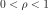
Intermediate quantile level.
- event
See also
Notes
The following explanations are given for a failure event defined as 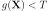 with
 a random vector following a joint PDF 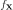,
a random vector following a joint PDF 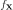,  a threshold and
a threshold and  a limit state function,
without loss of generality.
a limit state function,
without loss of generality.The Importance Sampling (IS) probability estimate 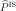 is given by:
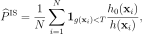
with 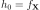 the PDF of
,  the auxiliary PDF of Importance Sampling,
the auxiliary PDF of Importance Sampling,
 and 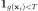 the
indicator function of the failure domain.
and 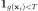 the
indicator function of the failure domain.The optimal density minimizing the variance of the estimator 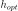 is defined as:
with
 the failure probability which is inaccessible in practice since this probability is the quantity of interest
and unknown.
the failure probability which is inaccessible in practice since this probability is the quantity of interest
and unknown.The objective of Non parametric Adaptive Importance Sampling (NAIS) [morio2015] is to approximate the IS optimal auxiliary density from the preceding equation with a kernel density function (e.g. Gaussian kernel). Its iterative principle is described by the following steps.
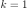 and set 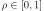
Generate the population 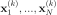 according to the PDF 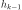, apply the function
in order to have 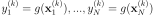Compute the empirical
 -quantile 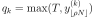
-quantile 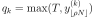Estimate 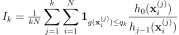
Update the Gaussian kernel sampling PDF with:
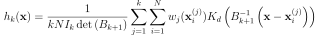
where 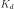 is the PDF of the standard
 -dimensional normal distribution,
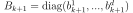
and 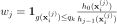.
The coefficients of the matrix 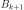 can be approximated (Silverman Rule) or postulated according to the AMISE
(Asymptotic Mean Integrated Square Error) criterion for example.
-dimensional normal distribution,
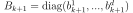
and 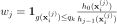.
The coefficients of the matrix 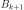 can be approximated (Silverman Rule) or postulated according to the AMISE
(Asymptotic Mean Integrated Square Error) criterion for example.If 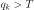, 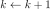, go to Step 2
Estimate the probability 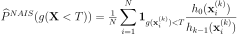
The NAIS algorithm with the Silverman rule is implemented in the current NAIS class.
Examples
>>> import openturns as ot >>> ot.RandomGenerator.SetSeed(0) >>> # We create the function defining the limit state >>> myFunction = ot.SymbolicFunction(['E', 'F', 'L', 'I'], ['-F*L^3/(3*E*I)']) >>> # We define a joint PDF of interest >>> myDistribution = ot.Normal([50.0, 1.0, 10.0, 5.0], [1.0]*4, ot.IdentityMatrix(4)) >>> # We create a 'usual' RandomVector from the Distribution >>> vect = ot.RandomVector(myDistribution) >>> # We create a composite random vector >>> output = ot.CompositeRandomVector(myFunction, vect) >>> # We create an event from this RandomVector >>> myEvent = ot.ThresholdEvent(output, ot.Less(), -10.0) >>> # We create a NAIS algorithm >>> algo = ot.NAIS(myEvent, 0.1) >>> # Perform the simulation >>> algo.run()
Methods
drawProbabilityConvergence(*args)Draw the probability convergence at a given level.
Accessor to the block size.
Accessor to the object's name.
Accessor to the convergence strategy.
getEvent()Accessor to the event.
getId()Accessor to the object's id.
Accessor to the maximum coefficient of variation.
Accessor to the maximum sample size.
Accessor to the maximum standard deviation.
getName()Accessor to the object's name.
Accessor to the results.
Accessor to the intermediate quantile level.
Accessor to the object's shadowed id.
Accessor to verbosity.
Accessor to the object's visibility state.
hasName()Test if the object is named.
Test if the object has a distinguishable name.
run()Launch simulation.
setBlockSize(blockSize)Accessor to the block size.
setConvergenceStrategy(convergenceStrategy)Accessor to the convergence strategy.
Accessor to the maximum coefficient of variation.
setMaximumOuterSampling(maximumOuterSampling)Accessor to the maximum sample size.
Accessor to the maximum standard deviation.
setName(name)Accessor to the object's name.
setProgressCallback(*args)Set up a progress callback.
setRhoQuantile(rhoQuantile)Accessor to the intermediate quantile level.
setShadowedId(id)Accessor to the object's shadowed id.
setStopCallback(*args)Set up a stop callback.
setVerbose(verbose)Accessor to verbosity.
setVisibility(visible)Accessor to the object's visibility state.
- __init__(*args)¶
- drawProbabilityConvergence(*args)¶
Draw the probability convergence at a given level.
- Parameters
- levelfloat, optional
The probability convergence is drawn at this given confidence length level. By default level is 0.95.
- Returns
- grapha
Graph probability convergence graph
- grapha
- getBlockSize()¶
Accessor to the block size.
- Returns
- blockSizeint
Number of terms in the probability simulation estimator grouped together. It is set by default to 1.
- getClassName()¶
Accessor to the object’s name.
- Returns
- class_namestr
The object class name (object.__class__.__name__).
- getConvergenceStrategy()¶
Accessor to the convergence strategy.
- Returns
- storage_strategy
HistoryStrategy Storage strategy used to store the values of the probability estimator and its variance during the simulation algorithm.
- storage_strategy
- getEvent()¶
Accessor to the event.
- Returns
- event
RandomVector Event we want to evaluate the probability.
- event
- getId()¶
Accessor to the object’s id.
- Returns
- idint
Internal unique identifier.
- getMaximumCoefficientOfVariation()¶
Accessor to the maximum coefficient of variation.
- Returns
- coefficientfloat
Maximum coefficient of variation of the simulated sample.
- getMaximumOuterSampling()¶
Accessor to the maximum sample size.
- Returns
- outerSamplingint
Maximum number of groups of terms in the probability simulation estimator.
- getMaximumStandardDeviation()¶
Accessor to the maximum standard deviation.
- Returns
- sigmafloat,

Maximum standard deviation of the estimator.
- sigmafloat,
- getName()¶
Accessor to the object’s name.
- Returns
- namestr
The name of the object.
- getResult()¶
Accessor to the results.
- Returns
- results
SimulationResult Structure containing all the results obtained after simulation and created by the method
run().
- results
- getRhoQuantile()¶
Accessor to the intermediate quantile level.
- Returns
- rhoQuantile: float
Intermediate quantile level.
- getShadowedId()¶
Accessor to the object’s shadowed id.
- Returns
- idint
Internal unique identifier.
- getVerbose()¶
Accessor to verbosity.
- Returns
- verbosity_enabledbool
If True, the computation is verbose. By default it is verbose.
- getVisibility()¶
Accessor to the object’s visibility state.
- Returns
- visiblebool
Visibility flag.
- hasName()¶
Test if the object is named.
- Returns
- hasNamebool
True if the name is not empty.
- hasVisibleName()¶
Test if the object has a distinguishable name.
- Returns
- hasVisibleNamebool
True if the name is not empty and not the default one.
- run()¶
Launch simulation.
Notes
It launches the simulation and creates a
SimulationResult, structure containing all the results obtained after simulation. It computes the probability of occurrence of the given event by computing the empirical mean of a sample of size at most outerSampling * blockSize, this sample being built by blocks of size blockSize. It allows one to use efficiently the distribution of the computation as well as it allows one to deal with a sample size 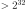 by a combination of blockSize and outerSampling.
- setBlockSize(blockSize)¶
Accessor to the block size.
- Parameters
- blockSizeint, 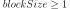
Number of terms in the probability simulation estimator grouped together. It is set by default to 1.
Notes
For Monte Carlo, LHS and Importance Sampling methods, this allows one to save space while allowing multithreading, when available we recommend to use the number of available CPUs; for the Directional Sampling, we recommend to set it to 1.
- setConvergenceStrategy(convergenceStrategy)¶
Accessor to the convergence strategy.
- Parameters
- storage_strategy
HistoryStrategy Storage strategy used to store the values of the probability estimator and its variance during the simulation algorithm.
- storage_strategy
- setMaximumCoefficientOfVariation(maximumCoefficientOfVariation)¶
Accessor to the maximum coefficient of variation.
- Parameters
- coefficientfloat
Maximum coefficient of variation of the simulated sample.
- setMaximumOuterSampling(maximumOuterSampling)¶
Accessor to the maximum sample size.
- Parameters
- outerSamplingint
Maximum number of groups of terms in the probability simulation estimator.
- setMaximumStandardDeviation(maximumStandardDeviation)¶
Accessor to the maximum standard deviation.
- Parameters
- sigmafloat,
Maximum standard deviation of the estimator.
- sigmafloat,
- setName(name)¶
Accessor to the object’s name.
- Parameters
- namestr
The name of the object.
- setProgressCallback(*args)¶
Set up a progress callback.
Can be used to programmatically report the progress of a simulation.
- Parameters
- callbackcallable
Takes a float as argument as percentage of progress.
Examples
>>> import sys >>> import openturns as ot >>> experiment = ot.MonteCarloExperiment() >>> X = ot.RandomVector(ot.Normal()) >>> Y = ot.CompositeRandomVector(ot.SymbolicFunction(['X'], ['1.1*X']), X) >>> event = ot.ThresholdEvent(Y, ot.Less(), -2.0) >>> algo = ot.ProbabilitySimulationAlgorithm(event, experiment) >>> algo.setMaximumOuterSampling(100) >>> algo.setMaximumCoefficientOfVariation(-1.0) >>> def report_progress(progress): ... sys.stderr.write('-- progress=' + str(progress) + '%\n') >>> algo.setProgressCallback(report_progress) >>> algo.run()
- setRhoQuantile(rhoQuantile)¶
Accessor to the intermediate quantile level.
- Parameters
- rhoQuantile: float
Intermediate quantile level.
- setShadowedId(id)¶
Accessor to the object’s shadowed id.
- Parameters
- idint
Internal unique identifier.
- setStopCallback(*args)¶
Set up a stop callback.
Can be used to programmatically stop a simulation.
- Parameters
- callbackcallable
Returns an int deciding whether to stop or continue.
Examples
Stop a Monte Carlo simulation algorithm using a time limit
>>> import openturns as ot >>> experiment = ot.MonteCarloExperiment() >>> X = ot.RandomVector(ot.Normal()) >>> Y = ot.CompositeRandomVector(ot.SymbolicFunction(['X'], ['1.1*X']), X) >>> event = ot.ThresholdEvent(Y, ot.Less(), -2.0) >>> algo = ot.ProbabilitySimulationAlgorithm(event, experiment) >>> algo.setMaximumOuterSampling(10000000) >>> algo.setMaximumCoefficientOfVariation(-1.0) >>> timer = ot.TimerCallback(0.1) >>> algo.setStopCallback(timer) >>> algo.run()
- setVerbose(verbose)¶
Accessor to verbosity.
- Parameters
- verbosity_enabledbool
If True, make the computation verbose. By default it is verbose.
- setVisibility(visible)¶
Accessor to the object’s visibility state.
- Parameters
- visiblebool
Visibility flag.